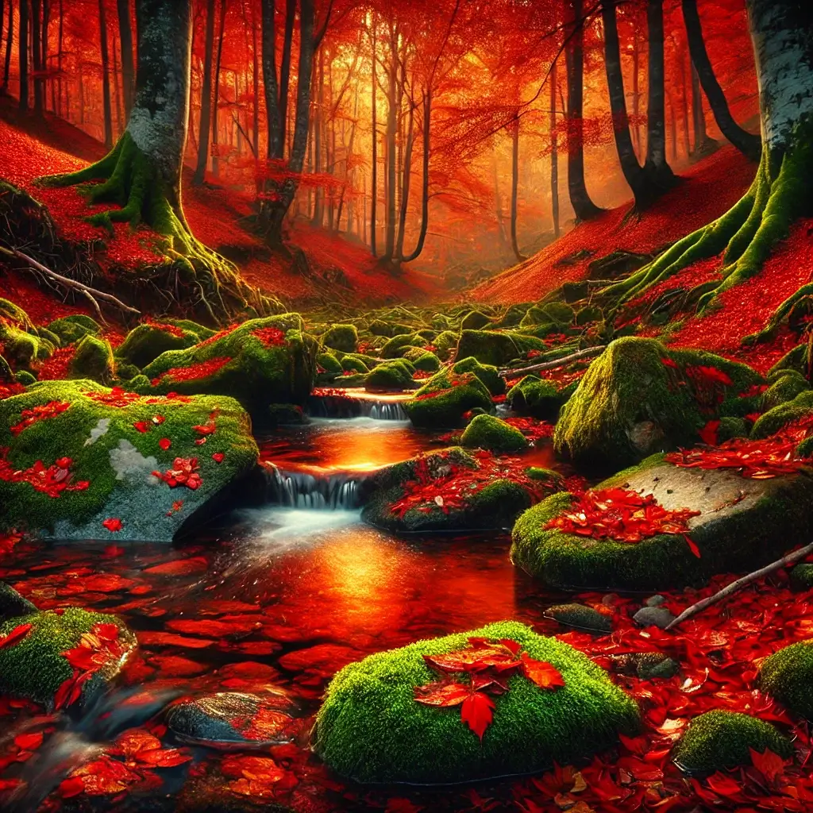
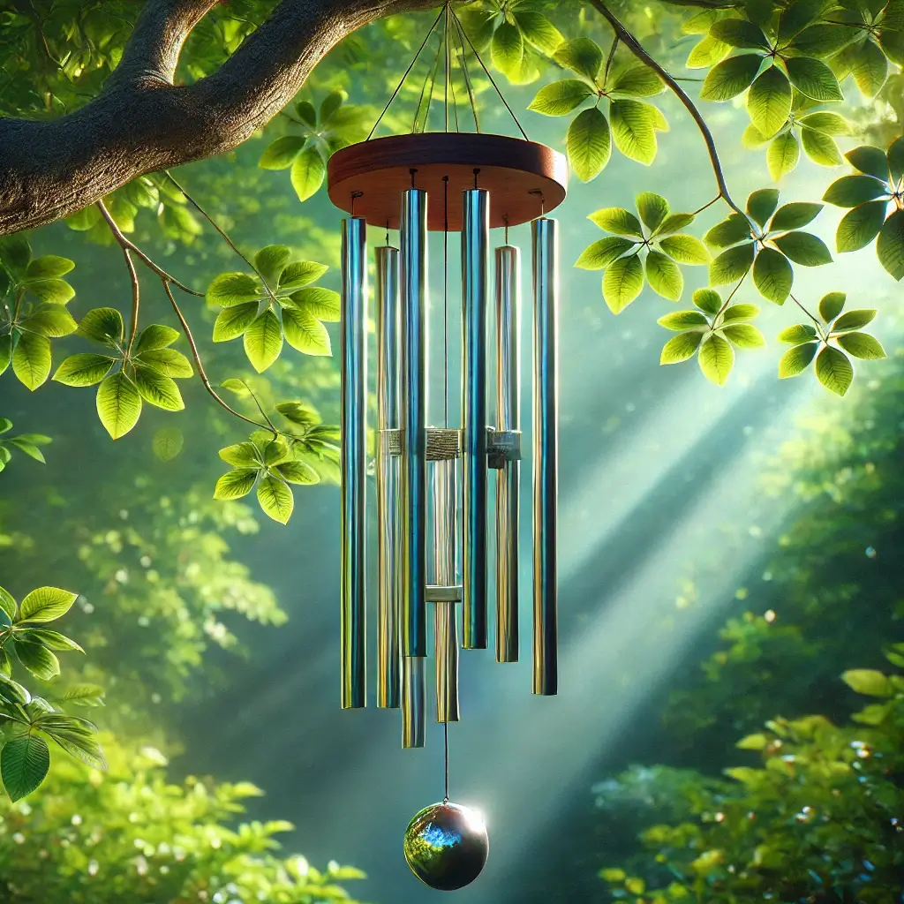

Rekomendacje
Spokój wśród trzcin
Spokój strumienia
Muzyka wśród liści
Wybierz film z rekomendacji
Ustawienia
Napisy opisowe
Tryb opisu wizualnego
Audiodeskrypcja
To jest powiadomienie.
To jest inne powiadomienie.
Napisy opisowe
Tryb opisu wizualnego
Audiodeskrypcja